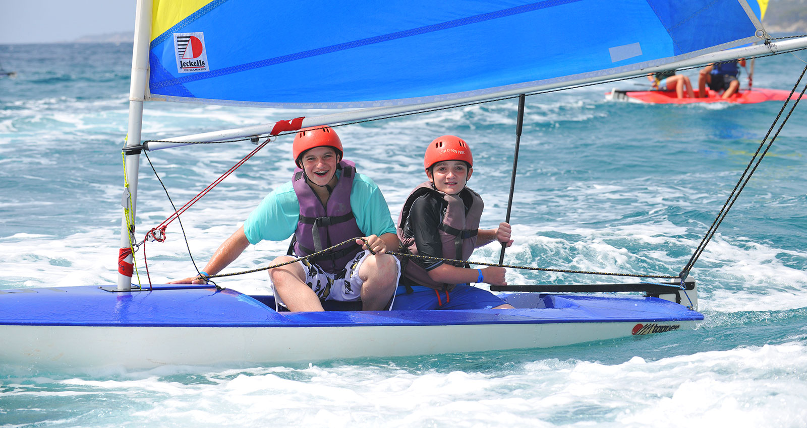

Durham 2020
Our 60 acre site set in beautiful countryside will be our home for Durham’s first international Scout Jamboree between the 1st and 8th August 2020. We’ve got a life changing adventure planned for the 2000+ participants who will join us. Scouts and Explorers from around the world will be immersed in our 7 night, 8 day experience that will have a real buzz, a great range of activities and languages from around the world. Join one of our five sub-camp communities, experience the spectacle of the opening and closing ceremonies and take part in 6 days of exciting and adventurous activities. We’re also inviting Beavers and Cubs from across Durham to take part in their very own Jamboree adventure through our day visitor programme and overnight experiences. To find out more and book visit https://www.durham2020.org.uk/
National Scout Sailing Regatta 2019
The National Scout Sailing Regatta has been running for many years and over its history has taken place at a number of venues. The regatta aims to offer competitive and inclusive sailing to everyone. If you can sail a triangular course, it’s for you! We will however aim to run the event fairly using the Racing Rules of Sailing and a Notice of Race and Sailing Instructions will be published closer to the event.
When?
The event will be held from Friday 20 September to Sunday 22 September.
Where?
The event will be hosted at Nottingham Scouts Activity Centre. The centre is based on an old gravel extraction pit and has been slowly returning to nature over the past ten years. The path around the lake is over 3 miles long and the water covers an area in excess of 165 acres.
What to expect?
Racing is run under the Portsmouth Yardstick handicap system and we will offer fast and slow fleet double handicapped, and singlehanded races each run under the four different age groups; U13, U15, U18, and Leaders (over 18). Weather permitting there will be 4 races per age group.
You can enter the camp competitons by emailing Camps@Scouts.com Or visit https://notts-scouts.org.uk/regatta/.
During the day we will also be offering an opportunity to try Canoeing Kayaking or stand up paddleboard SUP on a small area of our extensive lake. We have a geo-caching trail set up on site as well. There are a number of interesting things to do in the area with the local town of Southwell having a 12th century Cathedral, Southwell Minster. The Workhouse museum also makes an interesting visit. While Nottingham of course is the home of Robin Hood and a visit to the Sherwood Forest is another worthwhile activity for those not interested in the sailing.
More local to Hoveringham and only a short walk away through Hoveringham village is Ferry Farm, a country park suitable for younger children. There are also a number of footpaths offering walks around our lake through the village and along the River Trent. For more information and to book your place please visit https://notts-scouts.org.uk/regatta/.
The 24th World Scout Jamboree 2019
What is a World Scout Jamboree?
The World Scout Jamboree is above all an educational event that brings together the world’s young people to promote peace and mutual understanding and to develop leadership and life skills. The 24th World Scout Jamboree will feature the hallmarks of past world jamboree programs, such as the Global Development Village, special sustainability initiatives, and the socialization elements that allow participants to make lifelong friends from around the world. Unlike any other youth event, the World Scout Jamboree invites you to surround yourself in diverse global cultures by joining your new Scouting friends at a single destination for 12 unforgettable days. The jamboree experience extends beyond your home—and beyond the boundaries of our countries—to create a global adventure that will last a lifetime!
Who Attends the World Scout Jamboree?
The 24th World Scout Jamboree is an official educational event of the World Organization of the Scout Movement (WOSM). It is specifically designed for young people ages 14 to 17 years old from National Scout Organizations (NSOs), which are members of WOSM. NSOs send approved contingents of youth participants; adult unit leaders; and adult International Service Team members, who are the staff for the jamboree.
The Jamboree Hosts
This 24th World Scout Jamboree is unique because it is a team effort by Scouts Canada, Asociación de Scouts de México, and the Boy Scouts of America. Our three countries are getting ready to welcome our Scouting friends as family to “Unlock a New World.”
The Theme
Our theme, Unlock a New World, invites you to unlock new adventures, new cultures, and new friendships. The theme was originally designed by youth representatives from our three host countries, also known as the “Dream Team,” who were responsible for presenting the original bid for the 24th World Scout Jamboree. Because our jamboree is being hosted in North America, it will be defined by the cultures found in the “New World” countries of Mexico, Canada, and the USA. This jamboree will provide a different view on the Scouting movement. Holding fast to our traditions of conservation and outdoorsmanship, a jamboree in the New World is a jamboree that embraces the growing trend of leadership development and global citizenship that our movement has cultivated.
Where is the Jamboree Site?
Situated in the wilds of West Virginia, The Summit Bechtel Reserve is a training, Scouting, and adventure center for the millions of youth and adults involved in the Boy Scouts of America (BSA) and anyone who loves the outdoors. The Summit Bechtel Reserve is also home to the BSA’s National Scout Jamborees, and its Paul R. Christen National High Adventure Base complements the BSA’s other high adventure bases: Philmont Scout Ranch, Northern Tier and Florida Sea Base. The Summit is a world-class, sustainable jamboree site with more than 14,000 acres (5,667 ha) of beautiful forested mountains adjacent to more than 70,000 acres (28,328 ha) of national park in the scenic New River Gorge area of West Virginia.
For more information and to book your place please visit https://www.2019wsj.org/